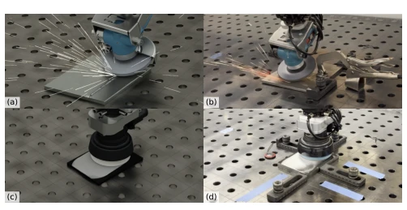
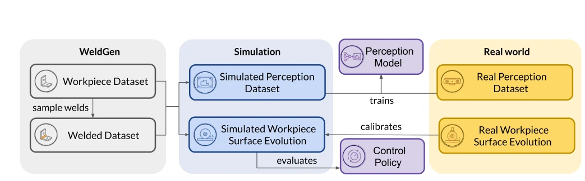
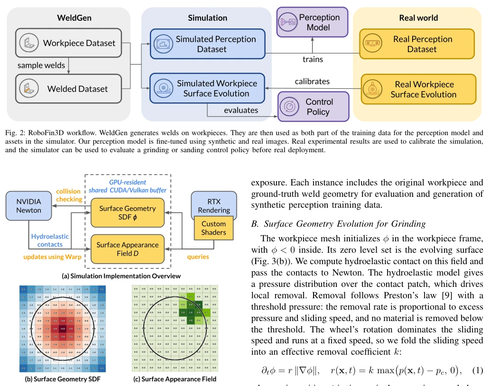
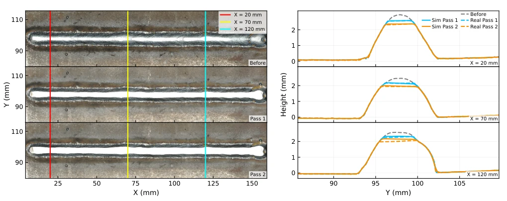
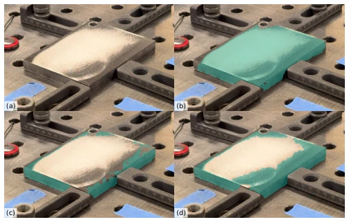

This paper provides a form of 'regret medicine' for the robot polishing industry. Physical experiments are prohibitively expensive; once a workpiece is damaged during polishing, it cannot be restored. The authors developed a RoboFin3D simulation platform that uses SDF to record geometric changes and surface fields to record appearance changes, effectively saving materials. However, do not rejoice too soon; the polishing volume error reaches up to 26%, and this accuracy is still far from industrial deployment. However, fine-tuning SAM2 on simulation data to boost real segmentation IoU to 97% is indeed impressive. It counts as a decent middleware, but still falls short of fully replacing real machines. After all, the gap between simulation and reality cannot be bridged by merely calibrating a few parameters; future work must continue to polish on contact models and real-time performance.
Robot surface polishing is an industrial necessity, but the cost of physical trial-and-error is extremely high. Each experiment permanently alters the workpiece, making it irrecoverable, resulting in expensive and difficult-to-reproduce strategy evaluation [1]. Existing works are often fragmented: some focus only on geometric removal [4], some only on rendering [5], and some rely on limited real data for scratch segmentation [7], lacking a unified platform capable of simultaneously simulating contact, material removal, and camera imaging. Although literature [6] involves virtual verification, it does not provide a complete closed loop of simulation asset generation and perception transfer. Therefore, there is an urgent need for a low-cost, reproducible Sim-to-Real platform to accelerate strategy development and perception model training, addressing the pain point of irreversibility when workpieces are damaged, and lowering the R&D threshold.

Fig. 1: RoboFin3D is able to model grinding material removal and sanding appearance changes. (a) and (b) are simulated and real grinding processes. (c) and (d) are simulated and real sanding processes.

Fig. 2: RoboFin3D workflow. WeldGen generates welds on workpieces. They are then used as both part of the training data for the perception model and assets in the simulator. Our perception model is fine-tuned using synthetic and real images. Real experimental results are used to calibrate the simulation, and the simulator can be used to evaluate a grinding or sanding control policy before real deployment.
The overall process involves WeldGen generating workpieces with weld seams, inputting them into Isaac Sim for simulation, and finally calibrating them for perception fine-tuning. The core innovation lies in the dual-field representation: 1) Using SDF to record workpiece geometric evolution, calculating grinding removal based on Preston's law, supporting fluid-elastic contact computation without intermediate mesh extraction; 2) Using an independent surface field to record sanding appearance changes, accumulating pressure and sliding speed, mixing coating and substrate appearance during rendering. The WeldGen module generates weld seams of controllable difficulty on 8918 CAD models. In terms of GPU implementation, Warp updates the fields, Newton queries the SDF for contact, and the Isaac Sim renderer queries the fields directly, avoiding CPU copying. Formulas (1) and (2) define the removal rate and coating exhaustion degree, respectively, ensuring physical consistency. Finally, contact and removal parameters are calibrated using real experimental data to ensure the credibility of simulation physical laws, achieving full-link simulation from geometry to appearance.

Fig. 3: Simulation architecture. (a) Surface geometry represented by the SDF ϕ and surface appearance represented by the field D reside in a shared CUDA/Vulkan buffer. Newton supplies hydroelastic contacts for updates using Warp, while custom shaders in Isaac Sim’s RTX renderer query the fields directly. (b) SDF representation of the workpiece geometry. (c) Surface field representing the workpiece surface appearance.
The evaluation is divided into two parts. In terms of physical fidelity, comparing real optical scans with simulation height profiles, the IoU for sanded exposed areas reaches 0.89, but the grinding volume error is approximately 20-26%. Regarding perception transfer, using the SAM2 model on a real test set, fine-tuning solely with simulation data improved the segmentation IoU for unsanded areas from 77.15% to 84.47%, and after combining with a small amount of real data, it reached 97.41%. Ablation experiments show that simulation data can effectively fill the gap in real annotation insufficiency, but grinding errors indicate that the physical model still requires optimization. This demonstrates the effectiveness of synthetic data for perception model transfer; although there is still room for improvement in physical simulation accuracy, it provides a low-cost data source for subsequent strategy learning.

Fig. 4: Measured and simulated height profiles of a workpiece after two grinding passes. Left: optical scans before processing and after each pass, with the sections used for comparison marked at X = 20, 70, and 120 mm. Right: measured (Real) and simulated (Sim) height profiles at those sections. The simulated height profiles resemble the real experimental results.

Fig. 5: Qualitative results for segmentation of unsanded regions on a real workpiece. (a) Input RGB image; (b) pretrained SAM2; (c) Sim-only; (d) Sim + real. Teal overlays indicate predicted unsanded regions.